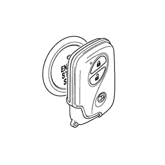
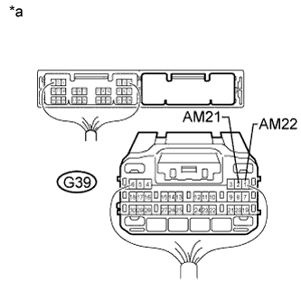
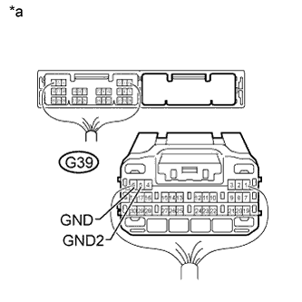
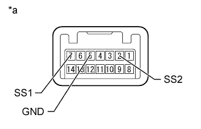

ENTRY AND START SYSTEM (for Start Function) > Power Source Mode does not Change to ON (IG and ACC) |
| Problem Symptom | Data List Item | Active Test Item |
| Power source mode does not change to on (IG) or on (ACC) | Power Source Control
Starting Control
| - |
| 1.CHECK DTC (ALL) |
Using the intelligent tester, confirm the output of DTCs for all systems.
|
| ||||
| OK | |
| 2.CHECK WIRELESS DOOR LOCK CONTROL SYSTEM |
Check that the wireless lock and unlock functions operate normally.
|
| ||||
| OK | |
| 3.INSPECT ENTRY AND START SYSTEM |
|  |
Remove the battery of the electrical key transmitter.
With the brake pedal depressed, touch the key to the engine switch.
Press and hold the engine switch for a maximum of 15 seconds and check if the engine can be started.
|
| ||||
| OK | ||
| ||
| 4.READ VALUE USING INTELLIGENT TESTER (START SWITCH 1, 2) |
Connect the intelligent tester to the DLC3.
Turn the intelligent tester on.
Enter the following menus: Body / Power Source Control / Data List.
According to the display on the intelligent tester, read the Data List.
| Tester Display | Measurement Item/Range | Normal Condition | Diagnostic Note |
| Start Switch1 | Condition of engine switch contact 1/ON or OFF | ON: Engine switch pressed OFF: Engine switch not pressed |
|
| Start Switch2 | Condition of engine switch contact 2/ON or OFF | ON: Engine switch pressed OFF: Engine switch not pressed |
|
|
| ||||
| OK | |
| 5.CHECK HARNESS AND CONNECTOR (BATTERY - POWER MANAGEMENT CONTROL ECU) |
|  |
Disconnect the G39 power management control ECU connector.
Measure the voltage according to the value(s) in the table below.
| Tester Connection | Condition | Specified Condition |
| G39-2 (AM21) - Body ground | Always | 9.5 to 14 V |
| G39-1 (AM22) - Body ground |
| *a | Rear view of wire harness connector (to Power Management Control ECU) |
|
| ||||
| OK | |
| 6.CHECK HARNESS AND CONNECTOR (POWER MANAGEMENT CONTROL ECU - BODY GROUND) |
Disconnect the G39 power management control ECU connector.
|  |
Measure the resistance according to the value(s) in the table below.
| Tester Connection | Condition | Specified Condition |
| G39-6 (GND) - Body ground | Always | Below 1 Ω |
| G39-5 (GND2) - Body ground |
| *a | Rear view of wire harness connector (to Power Management Control ECU) |
|
| ||||
| OK | |
| 7.CHECK POWER MANAGEMENT CONTROL ECU |
Connect the power management control ECU connectors.
Connect the intelligent tester to the DLC3.
Turn the intelligent tester on.
Enter the following menus: Body / Power Source Control / Data List.
Read the Data List and check that the display changes according to the changes in the power source mode when the engine switch is pushed.
| Tester Display | Measurement Item/Range | Normal Condition | Diagnostic Note |
| Power Supply Condition | State of power supply/IG2 ON, ST ON, All OFF, IG1 ON or ACC ON | All OFF: Engine switch off (power supply off) ACC ON: Engine switch on (ACC) (ACC relay on) IG1 ON: Engine switch on (IG) (IG1 relay on) IG2 ON: Engine switch on (IG) (IG2 relay on) ST ON: Cranking engine (ST request signal on) | Since IG1 ON and IG2 ON turn "ON" at approximately the same time, IG2 ON may not be displayed. |
Measure the voltage according to the value(s) in the table below.
| *a | Component with harness connected (Power Management Control ECU) | - | - |
| Tester Connection | Switch Condition | Specified Condition |
| G39-20 (IG1D) - Body ground | Engine switch off | 1 V or less |
| Engine switch on (ACC)*1 | ||
| Engine switch on (IG)*2 | 9 V or higher | |
| G38-8 (IG2D) - Body ground | Engine switch off | 1 V or less |
| Engine switch on (ACC)*1 | ||
| Engine switch on (IG)*2 | 9 V or higher | |
| G39-19 (ACCD) - Body ground | Engine switch off | 1 V or less |
| Engine switch on (ACC)*1 | 8.5 V or higher | |
| Engine switch on (IG)*2 | 8.5 V or higher |
|
| ||||
| OK | ||
| ||
| 8.INSPECT ENGINE SWITCH |
|  |
Remove the engine switch.
Measure the resistance according to the value(s) in the table below.
| Tester Connection | Switch Condition | Specified Condition |
| 7 (SS1) - 5 (GND) | Engine switch not pushed | 10 kΩ or higher |
| Engine switch pushed | Below 1 Ω | |
| 2 (SS2) - 5 (GND) | Engine switch not pushed | 10 kΩ or higher |
| Engine switch pushed | Below 1 Ω |
| *a | Component without harness connected (Engine Switch) |
|
| ||||
| OK | |
| 9.CHECK HARNESS AND CONNECTOR (POWER MANAGEMENT CONTROL ECU - ENGINE SWITCH) |
Disconnect the G39 power management control ECU connector.
Disconnect the G24 engine switch connector.
Measure the resistance according to the value(s) in the table below.
| Tester Connection | Condition | Specified Condition |
| G39-17 (SSW2) - G24-2 (SS2) | Always | Below 1 Ω |
| G39-18 (SSW1) - G24-7 (SS1) | ||
| G39-17 (SSW2) - Body ground | Always | 10 kΩ or higher |
| G39-18 (SSW1) - Body ground | ||
| G24-5 (GND) - Body ground | Always | Below 1 Ω |
|
| ||||
| OK | ||
| ||